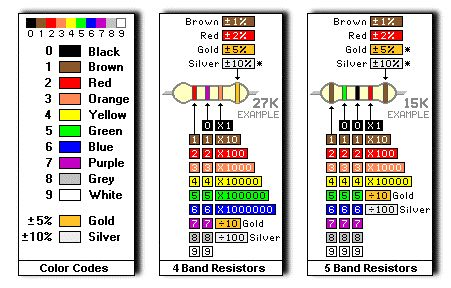
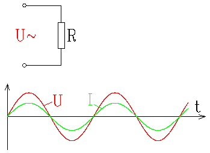
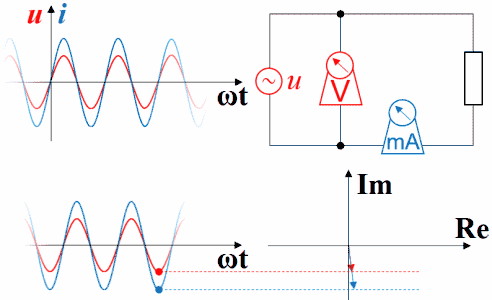

下面用三个篇章解释
# 视频篇
# 漫画篇

图片取自网络
# 文字篇
电阻，作为最基础的无源器件之一，在电子电路中的应用十分广泛。
1、电阻器与欧姆定律
电阻器（Resistor），泛指所有用以产生电阻的电子或电机配件。电阻器的运作跟随欧姆定律，其电阻值定义为其电压与电流相除所得的比值。

其中
・I 是流过导体的电流，单位是安培（A）。
・V 是导体两端的电位差，单位是伏特（V）。
・R 是导体的电阻，单位是欧姆（Ω）。
2、电阻单位和转换
采用国际单位制，电阻的单位为欧姆（Ω，Ohm）。电阻的倒数为电导 G，单位为西门子（S）。
其还有其他转换单位：千欧 (KΩ) 、兆欧 (MΩ)
单位转换：1 兆欧 (MΩ) = 1000 千欧 (KΩ) = 1000000 欧姆 (Ω)
3、电阻器的电路标志


4、电阻器的主要用途
・在放大器中，他被用做有源器件的负载、偏置电路或反馈元件；
・它与电容结合使用即可形成时间常数，并作为滤波器使用；
・它也可由于设置工作电流与信号电平；
・在电源电路中用于损耗功率，以减少相应电压；
・也用于测量电流以及在电源撤去后使电容放电；
・还用于在精准电路中建立电流，提供准确的电压比，以及设置准确的增益值；
・在逻辑电路中，作为总线和线路终端以及 “上拉” 与 “下拉” 电阻；
・在高压电路中，用于测量电压与均衡串接中的二极管或电容的泄漏电流；
・在射频电路中，甚至可以用来作为线圈，取代电感。
5、电阻的串联与并联
・以下是一列串联起来的电阻器：
电路两端的总电阻值为各电阻器的电阻之和，即

因此，利用电阻的串联，总可以得到一个阻值较大的电阻。
・以下是一组并联的电阻器：

由于所有电阻的电压相同，根据欧姆定律，它们的电流与电阻成反比，故

因此，利用电阻的并联，总可以得到一个阻值较小的电阻。
・在对电子电路进行分析时，我们往往更喜欢利用对电路的直觉与简化来分析问题，而不是习惯于复杂的代数公式
当简要分析电路是，对于串并联的分析，我们可以简化成：一个较大的电阻与一个较小的电阻串联（或并联）后其阻值接近于较大的（或较小）的电阻
而为了培养我们的直觉，我们也使用 电导 G = 1 /R 一词来理解记忆，一个较小的电阻反而是一个较大的电导，在所加的电压作用下可通过较大的电流
6、电阻色环阻值

7、电阻种类
・碳膜电阻（主要是在陶瓷棒上形成一层碳混合物膜）
・金属膜电阻（主要是利用真空沉积技术在陶瓷棒上形成一层镍铬合金镀膜）
・金属氧化膜电阻（主要是在陶瓷棒形成一层锡氧化物膜）
・绕线电阻（是将镍铬合金导线绕在氧化铝陶瓷基底上，一圈一圈控制电阻大小）
・可变电阻（可经由滑动而改变滑动端与两个固定端间电阻值的电子零件）
・压敏电阻（电阻值会随外部电压而改变）
・光敏电阻（利用光电导效应的一种特殊的电阻，与入射光的强弱有直接关系）
・热敏电阻（其阻值随温度的变化有极为显著的变化）
8、电阻参数
・标称阻值：电阻器上面所标示的阻值
・允许误差：标称阻值与实际阻值的差值跟标称阻值之比的百分数称阻值偏差，它表示电阻器的精度
・额定功率：在正常的大气压力 90-106.6KPa 及环境贴片电阻参数温度为－55℃～＋70℃的条件下，电阻器长期工作所允许耗散的较大功率
・额定电压：由阻值和额定功率换算贴片电阻参数出的电压
・温度系数：温度每变化 1℃所引起的电阻值的相对变化，温度系数越小，电阻的稳定性越好，阻值随温度升高而增大的为正温度系数，反之为负温度系数
・老化系数：电阻器在额定功率长期负荷下，阻值相对变化的百分数，贴片电阻，贴片电阻参数它是表示电阻器寿命长短的参数
・电压系数：在规定的电压范围内，电压每变化 1 伏，电阻器的相对变化量
・噪声：产生于电阻器中的一种不规则的电压起伏，包括热噪声贴片电阻，贴片电阻参数和电流噪声两部分，热噪声是由于导体内部不规则的电子自由运动，使导体任意两点的电压不规则变化
平常我们一般只关注阻值、精度、额度功率，这三个指标合适即可。在数字电路中，我们无需关注太多的细节，毕竟只有 1 和 0 的数字里面，不必计较其微乎其微的影响；但是在模拟电路中，当我们使用精准的电压源，或者对信号进行模数转换，又或者放大一个微弱的信号时，阻值的小小变动都会带来很大的影响了
9、0 欧电阻
・可以做跳线调试用
・在高频信号下，充当电感或电容用
・单点接地（模拟地和数字地单点接地）
・熔丝作用
・配置电路（eg：STM32 的 BOOT）
・布线时作跨线处理（1206 封装的电阻）
10、上拉电阻和下拉电阻
・上拉就是将不确定的信号通过一个电阻嵌位在高电平，电阻同时起限流作用！下拉同理
・上拉是对器件注入电流，下拉是输出电流
・上拉电阻是用来解决总线驱动能力不足时提供电流的，一般说法是拉电流；下拉电阻是用来吸收电流的，也就是我们通常所说的灌电流
・弱强只是上拉电阻的阻值不同，没有什么严格区分
11、纯阻性负载电压电流的超前滞后
首先要提醒，相位的概念是针对正弦信号而言的，直流信号、非周期变化信号等都没有相位的概念
对于接上了正弦波的阻性负载，通过接上理想的直流电压表、直流电流表，可以观察到波形超前滞后的现象

如果还表现的还不够生动，可以用动态图演示，其用红色表示电压，蓝色表示电流：

纯阻性负载其超前角是 0 度，这个时候功率因数为 1
# 附录：